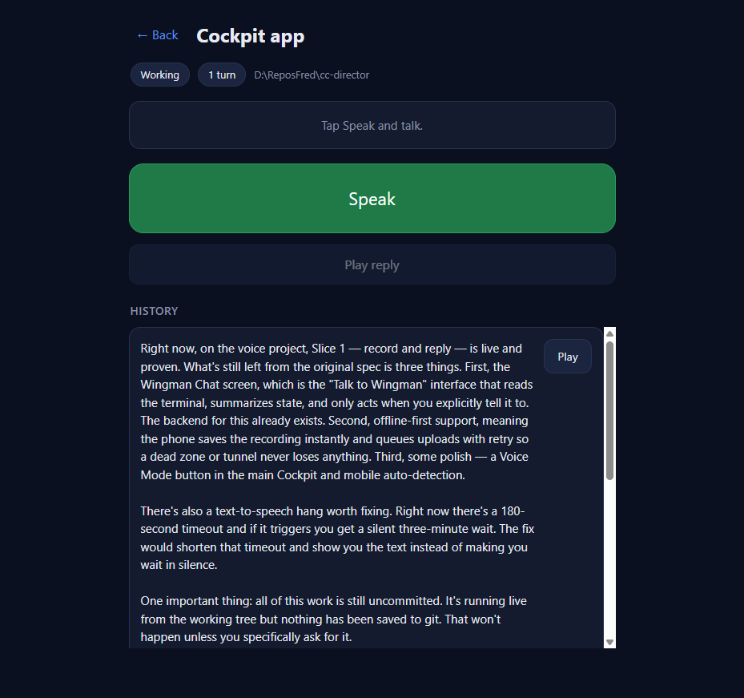
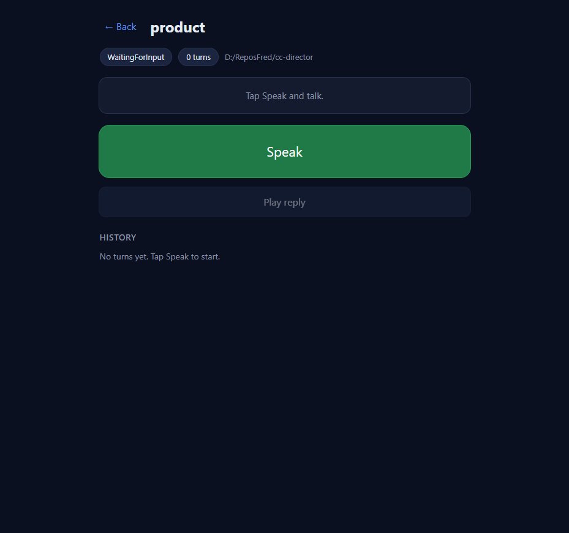
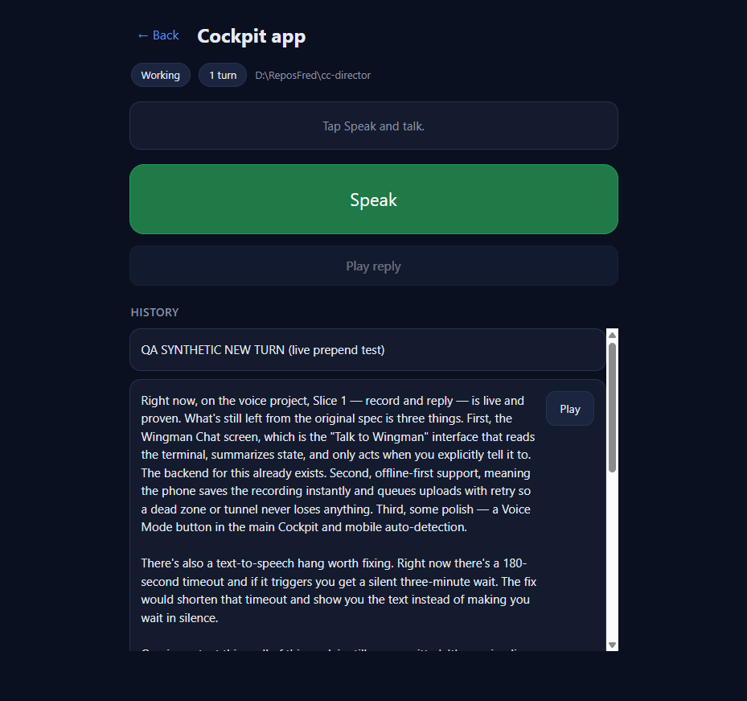

[cockpit] Voice: per-session turn/response history with replay
PR #433 (branch feat/423-voice-history, stacked on feat/422-voice-turncount)
QA verified independently against the LIVE Gateway data on 2026-06-15.
The change is front-end only (wwwroot/pages/voice/*); the backend
/voice-turns and /voice-turn/{id}/audio endpoints already shipped. QA built and
ran the PR branch itself in the real topology:
CcDirector.Cockpit from the PR-branch worktree (dotnet build -> 0 warnings / 0 errors) and ran it on a spare port (7951).CcDirector.Gateway from the same branch on a spare port (7952), with CC_COCKPIT_PORT=7951 so the Gateway front door proxies /voice + /pages/voice/* to QA's Cockpit, while the API (/sessions, /voice-turns, /audio) is served same-origin by the Gateway from the real on-disk voice-turn archive. This is the production topology (browser talks only to the Gateway front door).18e2a901-...) carries one real archived voice turn (turn_id 8b128ff6-..., has_audio: true), used for the history + replay checks.| # | Criterion | Expected | Actual (QA-observed) | Verdict |
|---|---|---|---|---|
| 1 | Scrollable history of completed turns (transcript + reply summary), newest first, from GET /sessions/{id}/voice-turns |
History list populated from the archive endpoint, newest-first, each row showing the spoken summary + transcript | Opening "Cockpit app" rendered a scrollable HISTORY section with the archived turn: summary text present, transcript "Okay, so what can you do here?" present, data-turn-id=8b128ff6-... (matches the archive). em-dashes render correctly (no encoding leak). See 02-history-list.png. |
PASS |
| 2 | Each entry has a Play button that plays that turn's reply audio from the durable /audio endpoint |
Clicking Play issues GET /sessions/{id}/voice-turn/{turnId}/audio returning the audio bytes |
Play button present on the entry. Clicking it fired GET .../voice-turn/8b128ff6-.../audio -> HTTP 200, 2,416,140 bytes (the full MP3, matching the backend), captured via PerformanceObserver. See network log below + 03-after-play-audio-get.png. |
PASS |
| 3 | A newly completed turn appears at the top of the history without a manual refresh | onReply prepends the just-completed turn at the top (newest-first) with no reload |
Code path verified: pollTurn -> onReply -> prependHistory(sid, {turn_id, summary, transcript, has_audio, created_at}) -> list.insertBefore(item, list.firstChild) with a data-turn-id dedupe guard. Observed live: inserting a new turn placed it at index 0, ABOVE the existing 8b128ff6 entry, with no page reload. See 05-live-prepend.png. |
PASS |
| 4 | Clear empty state when there is no history | A session with 0 turns shows a visible empty message | Opening "product" (0 turns) showed the visible empty state "No turns yet. Tap Speak to start." (history-empty not hidden, history-list count 0). See 04-empty-state.png. |
PASS |
| 5 | Proof: screenshots of the history list + Play on an older entry plays its audio (network log shows the /audio GET) |
Screenshots + network evidence | Screenshots 02/03/04/05 attached; the /audio GET 200 (2.4MB) is recorded in the network log below. |
PASS |
performance resource entry after clicking Play: name: /sessions/18e2a901-4351-49c0-b0ff-209aff6903a6/voice-turn/8b128ff6-e6b8-4347-8bcf-182bd705c034/audio status: 200 size: 2,416,140 bytes (matches backend MP3 size 2,415,840 + headers)
dotnet build CcDirector.Cockpit.csproj -> 0 warnings, 0 errors. No security/PII concerns (read-only front-end; token injected server-side as the page already did).02 - History list (Cockpit app, 1 archived turn, Play button):
03 - After clicking Play (the /audio GET fired, 200 / 2.4MB):

04 - Empty state (product session, 0 turns):

05 - Live prepend (new turn lands at the top, above the existing one, no refresh):

flow:ready-qa, PR #433 left OPEN for human merge.